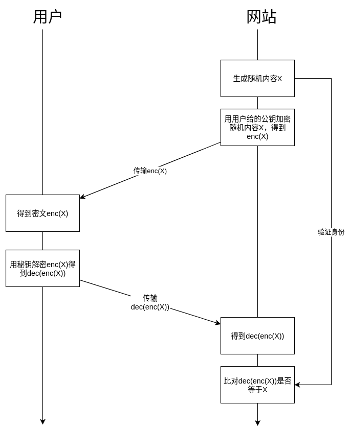

在Alice跟Bob的世界里，有一对非常神奇的钥匙对：
- 公钥只能给宝箱上锁，但是不能解锁。
- 私钥可以解锁宝箱。
这就是非对称加密的原理，非对称就是因为公钥能上锁但是不能解锁。公钥加密原理就是这么简单，难的是在数学上找到这一神奇的“钥匙对”。
现在假设我们是网站方，我要确认登录的用户是其本人，我们该怎么办？
我们可以用钥匙对来认证：我们知道用户给我们的公钥，我们想让用户证明他/她拥有对应的私钥。最简单的方式就是让用户把私钥给我们，但是这样中间监听的人可以轻而易举的盗号。
有没有不泄露私钥内容却也可以证明拥有私钥的方式？这个问题被称为零知识证明。
我们可以这样做：
- 我们随机生成一堆内容，然后把原文自己藏着。
- 我们把原文放到宝箱里，然后用公钥上锁
- 我们把上锁的宝箱送给用户
- 如果用户有对应的私钥，那么他/她就可以解锁宝箱，并且告诉我们宝箱里原文的内容。
- 我们这时候拿出来藏着的原文比对，如果对得上那么则表示用户的确拥有正确的私钥。
直接上图：
